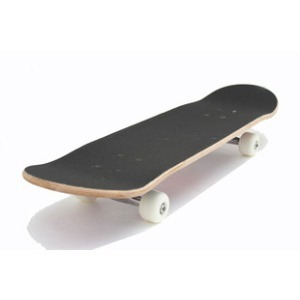
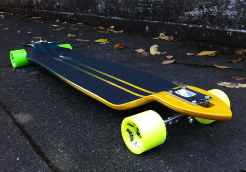
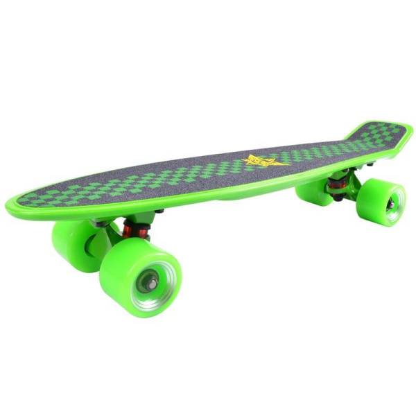

我该怎么去选择第一块滑板？
在你准备去某宝看首页那些对老手来看是垃圾的商品时，我们先系统的讲一下 滑板的分类和优缺点
原则上讲滑板分为如下几类：
1.双翘板

- 他的正面如上图。有一层黑色的东西，叫板砂，一层砂纸，用来增大你脚丫和板子的摩擦力。
- 通常来讲，判断一款板子是不是玩具的第一眼就是看有没有这层黑砂纸（当然有些砂纸是白色），如果没有那这款板子九成是玩具。
- 有明显的翘（前后翘起），用来完成跳板的动作。 轮子相对较小。
- 双翘板作为滑板的鼻祖，绝大部分看到滑板的都会想到的是这类板子。
- 他的优点有：灵活，轻盈便携，易于出动作而且教程繁多。
- 他的缺点有：低桥距，这意味着你不得不考虑减速杠。低抗震和较硬的轮子（通常）。
- 因此双翘的最大缺点是在未经改装时刷街对路面的适应能力极差 常见问题比如：轮子太硬水泥和沥青路声音巨大且震脚
- 长板近几年兴起，也是村长最爱的板种。
- 特点是：长（废话),通常长板的长度约一米二左右，根据设计风格略有不同。相当于约两个双翘板的长度。桥大，轮大，总之什么都大。
- 优点很明显：高速，抗震，适合长途，速度在十五公里到八十公里之间。（基本上和电动车是同速的）
- 缺点也很明显：重，不易携带。价格昂贵（相对）
- 小鱼板作为某宝装逼利器，实在是名至实归。
- 他具备了高桥距，大轮，抗震良好，价格便宜等特点。既便于携带，且易于装逼。
- 适合广大“我就是滑滑代步”的妹子使用。
- 优点很明显：价格实惠，易于携带，抗震和速度皆可。
- 缺点更明显：脚位极小，不利于动作的学习，不利于长期技术成长。对身体（尤其是膝盖影响很严重）
- 1.我看到视频里的人很酷/滑板很酷.
- 2.我想代步。
- 3.很新鲜，想试试。
- 50-150？ >
- 150-500？
- 1000以上？
2.长板

长板的重量大概在提着一颗大西瓜和提着小西瓜之间，根据板面的配方略有不同。 大型的轮子意味着你可以适应绝大部分城市交通，而板子大则意味着你有更多失误的机会来放置你的脚丫（而不是莫名其妙就踩地上摔了）。相对双翘动作更多是在板上的。比如某视频经常出现的长板女孩跳舞之类。但携带不便确实是极大的问题。
3.小鱼板

4.其他板类
如游龙板等花样繁多，这里就不赘述了。我们回到问题：该怎么选择第一块滑板？
首先回答，你为什么选择买滑板？
其次回答，你能接受的价格是多少？
1.觉得滑板很酷的同学可以先试着买一块双翘，价格在200-500之间的皆可，甚至你可以借朋友玩过的先试试。一般训练到成型（你能做到那些酷酷动作）大概需要至少一个月的时间勤学苦练。随着时间深入大部分的板友选择放弃，坚持下来的就是真正热爱这项运动的。再考虑下一步购入合适自己风格的滑板。
2.事实上除了长板其他板种不经过改装是不适合代步的。经常有同学问：那小鱼不是可以吗，好多同学都用来上学。讲道理使用小鱼代步是优质之选，较低的价格和易于携带适合板友在代步时购入，但小鱼板的脚位过小，不利于突发情况。
而且经验讲，我国大部分的女孩由于运动能力较差，腿部的发育都有或多或少的问题（比如X腿或者罗圈）。而滑板实质上对腿的发育是有一定限制性的， 长期使用小鱼板代步会出现或多或少的关节问题和腿部发育问题（比如女孩最怕的外八字腿）。初期在训练时使用小鱼来直接做代步也会导致基本功较差，姿势不正常（蹬板续航这件很多人觉得无所谓的事情，其实不合理规范对身体的伤害是巨大的）。 但是你依旧可以买一块小鱼板作为代步首选，规范你的蹬板姿势，购买正式的小鱼板（而不是某宝潮品八十元一个)少在恶劣路面蹬板都可以有效避免类似问题。
总结来看，购入一款入门滑板的费用应该在150以上（长板600以上）才能保证板的质量至少是专业型。
喜欢动作的可以试着购买双翘，喜欢代步的可以购买小鱼，喜欢速度与激情的可以购买长板。
双翘不好代步，脚丫会震。但是教程多学的人最多。
小鱼好代步，但是不能学到什么。适合喜欢买来玩玩的同学。
长板好代步不好携带，但是贵。
嗯。这就是你想要的入门推荐了。